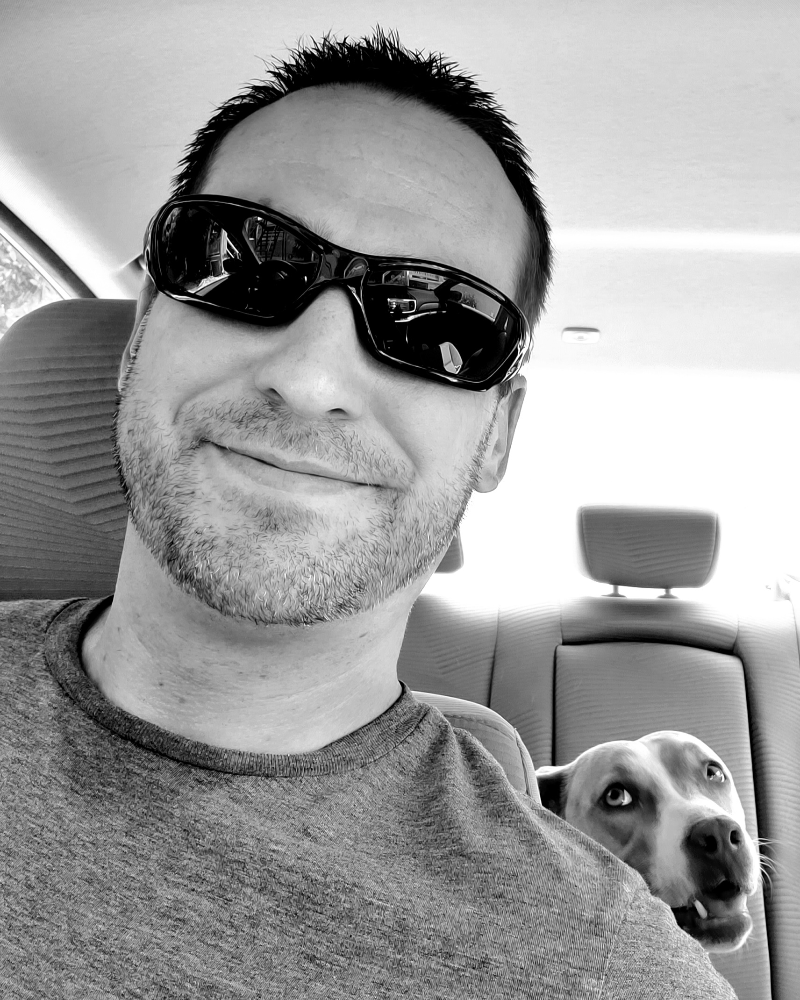
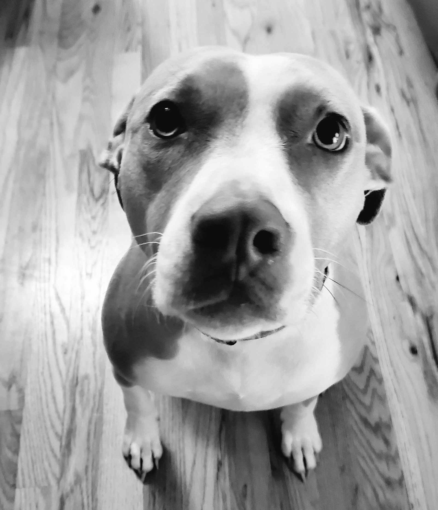

About
Zac
I obtained a BA in Applied Mathematics and a BS in Cellular & Molecular Biology nestled in the redwoods of northern California in what seems like another lifetime ago. I began my career as a lab scientist and worked in various positions in industry as well as in academic settings before deciding that wielding a pipette was ultimately not a great passion of mine. While pursuing other interests including traveling and learning Mandarin, I stumbled into the insurance industry. I gained valuable experience at large insurance companies while maintaining my principles amidst a background of varying ethical commitments. Perseverance paid off and after a few years I was able to leverage my knowledge and go into business for myself as an independent insurance broker. While growing my practice I have maintained my commitment to learning and self improvement. Over the course of the last couple of years I have become increasingly proficient at computer programming and data science and have earned various certifications through online learning platforms. I have focused much of my attention on learning Python as well as becoming familiar with Linux systems. I have also recommitted to a longtime goal of becoming fluent in Mandarin and will be testing my knowledge with an HSK exam in the near future. I am open to networking with anyone that is passionate about what they do and believes in being compassionate towards others.
Stella 'Goose'
I completed my Puppy Education certificate at the tender age of 5 months where I finished second in my class – bested only by a clever Shiba Inu. Inspired by a podcast with Peter Thiel, I decided not to pursue an over priced university degree and, instead, focused on becoming a self taught human companion. Unfortunately, I did not get selected for the Thiel Scholarship and I now work with Zac. I feel that my soft skills more than make up for any deficit I may have in more quantitative areas. My barking skills have been honed over the years by daily encounters with would be intruders. I can now hear the mailman from a block away and am proud to say they have yet to breach the front door. In addition to my verbal prowess, I am an exceptionally good listener. On a personal level, I enjoy walks in the park, chasing sticks and belly rubs. I have been told that I am a bit needy but I strongly believe that this is out weighed by commitment to unconditional love.